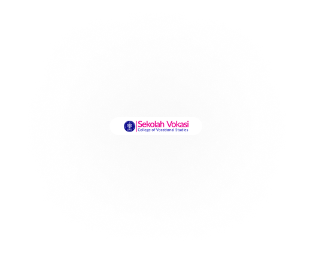

“IPB University sudah memiliki kelebihan dalam riset dan inovasi. Oleh karena itu, ketika riset dan inovasi ditambah dengan entrepreneurship maka apabila memiliki tujuan dalam konteks bisnis menjadi technopreneurial university. Sedangkan apabila kita memiliki tujuan dalam sosial maka menjadi sociopreneur university, maka IPB University memilih keduanya agar bisnis dan sosial bisa bersanding menjadi techno-socio preneurial university”.
Greenhouse Sekolah Vokasi IPB University sejalan dengan tujuan IPB University menjadi tecno-socio preneurial university yang bertujuan dalam membantu mahasiswa menjadi wadah pengembangan sosial dan teknologi. Mengembangkan riset dan menciptakan berbagai macam inovasi dalam berbagai sektor yang tidak hanya terfokus bergerak dalam bidang horticultura. Greenhouse Sekolah Vokasi IPB University berlokasikan di Kampus Bogor maupun Kampus Sukabumi Sekolah Vokasi IPB University yang memiliki beberapa perbedaan sistem teknologi.
Sekolah Vokasi IPB University mengembangkan teknologi Greenhouse terbaru dan ideal untuk pertumbuhan tanaman, Greenhouse yang terdapat dalam area Teaching Farming SV IPB di Kampus Cilebende, Bogor mampu mengendalikan iklim dan memungkinkan tanaman untuk tumbuh lebih cepat, lebih efisien, secara berkelanjutan di hampir setiap kondisi. Mulai dari sistem pemanasan yang inovatif, manajemen suhu dan pengendalian CO2, sistem pendingin dengan fogging, cooling pad, screen dan lainnya.
IPB sebagai universitas pertanian terbaik di Indonesia punya visi misi yang jelas tentang pertanian 4.0. Greenhouse menjadi salah satu inovasi selain dari pertanian konvensional yang mana cara ini kurang presisi untuk menghasilkan produk pertanian yang sesuai dengan kebutuhan tanaman untuk bertumbuh. Hasil pertanian dari greenhouse lebih tinggi hingga 8-10 kali dibandingkan dengan hasil di lapangan terbuka. Namun di sisi lain, input pertanian seperti air dan pupuk dapat dikurangi hingga 40%. Karena itu, dengan adanya greenhouse, metode pertanian dan ketahanan pangan yang lebih berkelanjutan serta greenhouse dapat menghadirkan masa depan yang menyenangkan.
Hasil tanaman dari Greenhouse Sekolah Vokasi memiliki kualitas yang tinggi dengan produk yang dapat dibanggakan mulai dari melon yang menjadi komoditas utama hingga anggrek yang menjadi primadona dari hasil rekayasa yang sering dipamerkan dalam berbagai event yang merupakan anggrek dengan kualitas terbaik dan tercantik yang ada di Bogor.

Anggrek jenis ini merupakan hasil rekayasa dari GreenHouse Sekolah Vokasi IPB University serta menjadi kebanggan dari GreenHouse ini.

Anggrek ini merupakan salah satu anggrek jenis baru selain Dendrobium Prof.Dr.Arif Satria, hasil campuran, hasil silangan dari Nindii dengan Wira Pride.

Anggrek ini juga salah satu dari tiga hasil rekayasa prodi TIB ynag merupakan hasil silangan Husmadi dengan Jeffrey Tan.
Kunjungan Prof.Dr.Arif Satria, SP, Msi dalam peresmian gedung Zeta sekaligus meneriam penyerahan anggrek Dendrobium Prof.Dr.Arif Satria, SP, Msi yang merupakan buatan hasil rekayasa dari Green House Sekolah Vokasi IPB University


Menjadi media akademik mahasiswa baik dalam penilitan maupun praktikum mahasiswa
Menjadi media informasi mengenai informasi seputar Greenhouse
Menjual hasil panen tanaman dari Greenhosue kapada mahasisawa maupun khalayak umum
Menyediakan pelatiahan mulai dari bagaimana membudidaya tanaman hingga pembuatan greenhouse
Tersedia hasil panen Greenhouse Sekolah Vokasi yang dapat dipesan

Tersedia layanan jasa pelatihan budidaya tanaman yang dapat dipesan

Beberapa jenis tanaman yang terdapat dalam Greenhouse Sekolah Vokasi telah terdaftar Royal Horticultural Society (RHS) yang berbasis di London dan telah terverifikasi. Sudah tersertifikat resmi sebagai jenis tanaman baru yang berlaku tanpa kadaluwarsa dan diakui secara internasional
<%= rs.getString("pesan") %>
Strawberry merupakan satu-satunya tanaman yand ditanam di sistem soiles gater yang tujuan utama penanaman strawberry ini bukan untuk dibudidayakkan namun bertujuann menjadi wisata rekreasi
Strawberry merupakan satu-satunya tanaman yand ditanam di sistem soiles gater yang tujuan utama penanaman strawberry ini bukan untuk dibudidayakkan namun bertujuann menjadi wisata rekreasi
Strawberry merupakan satu-satunya tanaman yand ditanam di sistem soiles gater yang tujuan utama penanaman strawberry ini bukan untuk dibudidayakkan namun bertujuann menjadi wisata rekreasi